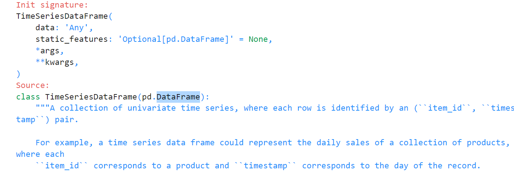
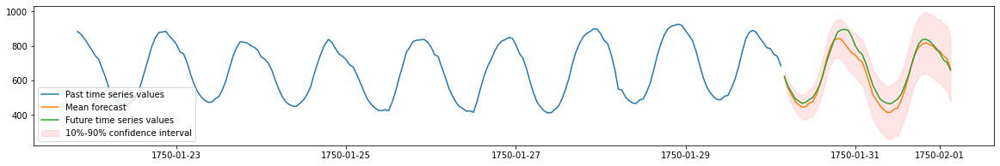

autogluon.timeseries?
Autogluon Timeseries는 AWS에서의 연구 및 개발을 기반으로 하며, 오픈 소스 커뮤니티와 공개 소프트웨어로 제공되고 있습니다. 이 라이브러리는 Python 언어로 작성되었으며, 주로 주피터 노트북과 함께 사용되며, 다양한 시계열 데이터에 대한 모델을 빠르게 실험하고 평가하는 데 도움이 됩니다.
autogluon.timeseries 라이브러리를 이용하여 시계열 예측을 하려면 아래와 같은 두개의 클래스를 이용하면 된다.
1. : TimeSeriesDataFrame
- 시계열 데이터를 로드하고, 데이터의 전처리, 탐색 및 준비를 수행하는 단계.
- 각 시계열은 “item_id,” “timestamp,” 그리고 “target” 열과 같은 기본 열 구조를 따라야 한다.
2. : TimeSeriesPredictor (1-학습/2-예측/3-평가)
- fit/predict/leaderboard
- 시계열 데이터에 대한 모델을 훈련하고 예측을 하는 단계.
- 시계열 모델을 자동으로 피팅(fitting)하고 모델 선택 및 하이퍼파라미터 튜닝을 수행한다.
- 다양한 시계열 모델 및 예측 알고리즘을 자동으로 적용하고 최적의 모델을 선택하여 사용자에게 최상의 예측 결과를 제공한다.
위를 요약하면, autogluon.timeseries 라이브러리를 사용하여 시계열 데이터를 저장/관리(TimeSeriesDataFrame)를 하고, 이러한 데이터를 기반으로 모델을 훈련하고 예측을 하는(TimeSeriesPredictor) 자동화된 시계열 예측 작업을 수행할 수 있다.
1. Loading time series data as a TimeSeriesDataFrame
df = pd.read_csv("https://autogluon.s3.amazonaws.com/datasets/timeseries/m4_hourly_subset/train.csv")
df.head()| item_id | timestamp | target | |
|---|---|---|---|
| 0 | H1 | 1750-01-01 00:00:00 | 605.0 |
| 1 | H1 | 1750-01-01 01:00:00 | 586.0 |
| 2 | H1 | 1750-01-01 02:00:00 | 586.0 |
| 3 | H1 | 1750-01-01 03:00:00 | 559.0 |
| 4 | H1 | 1750-01-01 04:00:00 | 511.0 |
AutoGluon을 사용하려면 시계열 데이터가 long format 이어야 한다.
| target | ||
|---|---|---|
| item_id | timestamp | |
| H1 | 1750-01-01 00:00:00 | 605.0 |
| 1750-01-01 01:00:00 | 586.0 | |
| 1750-01-01 02:00:00 | 586.0 | |
| 1750-01-01 03:00:00 | 559.0 | |
| 1750-01-01 04:00:00 | 511.0 | |
| ... | ... | ... |
| H200 | 1750-02-09 19:00:00 | 24.2 |
| 1750-02-09 20:00:00 | 22.6 | |
| 1750-02-09 21:00:00 | 20.8 | |
| 1750-02-09 22:00:00 | 19.6 | |
| 1750-02-09 23:00:00 | 18.8 |
148060 rows × 1 columns
- item
TimeSeriesDataFrame 클래스를 사용하여 여러 개의 시계열 데이터를 저장하며, 이러한 각각의 시계열 데이터를 “item” 이라고 부른다.
예를들어, 수요예측에서 각 “item”은 각각 다른 제품을 나타낼 수도 있고, 금융 데이터셋에서는 각 “item”이 주식을 나타낼 수 있음.
- 다변량 예측과의 차이
“multivariate forecasting”과 다르다는 것을 주의하자. “Multivariate forecasting”은 여러 변수 간의 상호작용을 모델링하고 다른 시계열 간의 관계를 고려하여 예측하는 것을 의미하는 반면 AutoGluon은 각 시계열을 개별적으로 처리하므로 “item” 간의 상호작용을 고려하지 않는다.
- pd.DataFrame을 상속

2. Training time series models with TimeSeriesPredictor.fit
시계열 예측을 위해 TimeSeriesPredictor 오브젝트를 생성하자.
- predictor 생성
- 적합
predictor.fit(
train_data,
presets="medium_quality", # 훈련시간 10분 제한 (medium_quality / fast_training / high_quality / best_quality)
time_limit=600,
)================ TimeSeriesPredictor ================
TimeSeriesPredictor.fit() called
Setting presets to: medium_quality
Fitting with arguments:
{'enable_ensemble': True,
'evaluation_metric': 'MASE',
'excluded_model_types': None,
'hyperparameter_tune_kwargs': None,
'hyperparameters': 'medium_quality',
'num_val_windows': 1,
'prediction_length': 48,
'random_seed': None,
'target': 'target',
'time_limit': 600,
'verbosity': 2}
Provided training data set with 148060 rows, 200 items (item = single time series). Average time series length is 740.3. Data frequency is 'H'.
=====================================================
AutoGluon will save models to autogluon-m4-hourly/
AutoGluon will gauge predictive performance using evaluation metric: 'MASE'
This metric's sign has been flipped to adhere to being 'higher is better'. The reported score can be multiplied by -1 to get the metric value.
Provided dataset contains following columns:
target: 'target'
Starting training. Start time is 2023-09-15 00:47:18
Models that will be trained: ['Naive', 'SeasonalNaive', 'Theta', 'AutoETS', 'RecursiveTabular', 'DeepAR']
Training timeseries model Naive. Training for up to 599.88s of the 599.88s of remaining time.
-6.6629 = Validation score (-MASE)
0.06 s = Training runtime
4.91 s = Validation (prediction) runtime
Training timeseries model SeasonalNaive. Training for up to 594.90s of the 594.90s of remaining time.
-1.2169 = Validation score (-MASE)
0.05 s = Training runtime
0.10 s = Validation (prediction) runtime
Training timeseries model Theta. Training for up to 594.74s of the 594.74s of remaining time.
-2.1425 = Validation score (-MASE)
0.06 s = Training runtime
29.74 s = Validation (prediction) runtime
Training timeseries model AutoETS. Training for up to 564.94s of the 564.94s of remaining time.
-1.9400 = Validation score (-MASE)
0.06 s = Training runtime
31.95 s = Validation (prediction) runtime
Training timeseries model RecursiveTabular. Training for up to 532.92s of the 532.92s of remaining time.
-0.8988 = Validation score (-MASE)
5.95 s = Training runtime
1.25 s = Validation (prediction) runtime
Training timeseries model DeepAR. Training for up to 525.71s of the 525.71s of remaining time.
-1.5221 = Validation score (-MASE)
47.08 s = Training runtime
0.77 s = Validation (prediction) runtime
Fitting simple weighted ensemble.
-0.8823 = Validation score (-MASE)
2.68 s = Training runtime
34.07 s = Validation (prediction) runtime
Training complete. Models trained: ['Naive', 'SeasonalNaive', 'Theta', 'AutoETS', 'RecursiveTabular', 'DeepAR', 'WeightedEnsemble']
Total runtime: 124.87 s
Best model: WeightedEnsemble
Best model score: -0.8823<autogluon.timeseries.predictor.TimeSeriesPredictor at 0x7f5246b844c0>- presets
프리셋이란, 말그대로 미리 정의해둔 설정이다. 즉, AutoGluon에서 사용할 모델과 훈련설정을 미리 정의해둔 설정을 말한다. 이 설정은 모델 선택과 하이퍼파라미터 튜닝을 자동화하여 더 빠르게 원하는 예측 모델을 찾을 수 있도록 도와준다.
- 옵션:
medium_quality,fast_training,high_quality,best_quality등을 제공
더 높은 품질의 프리셋은 일반적으로 더 정확한 예측 결과를 생성하지만 훈련에 더 많은 시간이 소요될 수 있다.
- 모델: medium_quality는 간단한 기본모델인 Naive, SeasonalNaive와 통계모델 (AutoETS, Theta), 트리기반 모델(LightGBM), 심층학습모델(DeepAR) 및 이러한 모델을 결합한 가중앙상블이 포함된다.
여기서 medium_quality는 훈련시간 10분 내로 제한하고, 이 모델 중 가장 좋은 예측 성능을 얻으려고 노력한다.
3. Generating forecasts with TimeSeriesPredictor.predict
Global seed set to 123
Model not specified in predict, will default to the model with the best validation score: WeightedEnsemble| mean | 0.1 | 0.2 | 0.3 | 0.4 | 0.5 | 0.6 | 0.7 | 0.8 | 0.9 | ||
|---|---|---|---|---|---|---|---|---|---|---|---|
| item_id | timestamp | ||||||||||
| H1 | 1750-01-30 04:00:00 | 624.225400 | 592.533253 | 603.438425 | 611.274422 | 617.975393 | 624.239736 | 630.498044 | 637.191945 | 645.042920 | 655.908431 |
| 1750-01-30 05:00:00 | 558.038120 | 515.235197 | 530.005515 | 540.575718 | 549.627181 | 558.071079 | 566.513349 | 575.543314 | 586.115937 | 600.829335 | |
| 1750-01-30 06:00:00 | 515.495213 | 464.240430 | 481.872256 | 494.568026 | 505.378544 | 515.514013 | 525.643002 | 536.460744 | 549.135748 | 566.750336 | |
| 1750-01-30 07:00:00 | 481.701016 | 423.316455 | 443.383962 | 457.847898 | 470.179675 | 481.696121 | 493.234340 | 505.589204 | 520.044493 | 540.152060 | |
| 1750-01-30 08:00:00 | 459.156714 | 394.461819 | 416.640338 | 432.661205 | 446.361193 | 459.170291 | 471.982521 | 485.641357 | 501.591228 | 523.913884 |
import matplotlib.pyplot as plt
# TimeSeriesDataFrame can also be loaded directly from a file
test_data = TimeSeriesDataFrame.from_path("https://autogluon.s3.amazonaws.com/datasets/timeseries/m4_hourly_subset/test.csv")
plt.figure(figsize=(20, 3))
item_id = "H1"
y_past = train_data.loc[item_id]["target"]
y_pred = predictions.loc[item_id]
y_test = test_data.loc[item_id]["target"][-48:]
plt.plot(y_past[-200:], label="Past time series values")
plt.plot(y_pred["mean"], label="Mean forecast")
plt.plot(y_test, label="Future time series values")
plt.fill_between(
y_pred.index, y_pred["0.1"], y_pred["0.9"], color="red", alpha=0.1, label=f"10%-90% confidence interval"
)
plt.legend();
4. Evaluating the performance of different models
- 리더보드 확인
# The test score is computed using the last
# prediction_length=48 timesteps of each time series in test_data
predictor.leaderboard(test_data, silent=True)Additional data provided, testing on additional data. Resulting leaderboard will be sorted according to test score (`score_test`).| model | score_test | score_val | pred_time_test | pred_time_val | fit_time_marginal | fit_order | |
|---|---|---|---|---|---|---|---|
| 0 | WeightedEnsemble | -0.850095 | -0.882350 | 48.495575 | 34.074169 | 2.684069 | 7 |
| 1 | RecursiveTabular | -0.870271 | -0.898770 | 0.802261 | 1.253653 | 5.947196 | 5 |
| 2 | SeasonalNaive | -1.022854 | -1.216909 | 0.107641 | 0.095930 | 0.053485 | 2 |
| 3 | DeepAR | -1.586545 | -1.522113 | 0.808109 | 0.772847 | 47.082557 | 6 |
| 4 | AutoETS | -1.778462 | -1.939952 | 46.754016 | 31.951739 | 0.059222 | 4 |
| 5 | Theta | -1.905365 | -2.142531 | 34.860988 | 29.740138 | 0.058667 | 3 |
| 6 | Naive | -6.696079 | -6.662942 | 0.103503 | 4.909723 | 0.061440 | 1 |